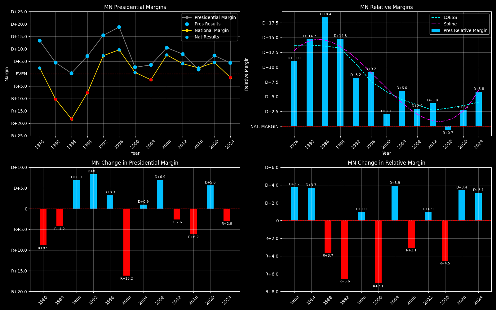

← Back to Map

Minnesota (MN) statewide
Minnesota (MN) — Data
| Year | D | R | Margin | Rel. Margin | Nat'l Margin | Margin Δ | Rel. Margin Δ | Nat'l Margin Δ |
|---|
| 1976 | 1,070,440 | 819,395 | D+13.3 | D+11.0 | D+2.3 | 0 | 0 | 0 |
| 1980 | 954,173 | 873,268 | D+4.4 | D+14.7 | R+10.3 | R+8.9 | D+3.7 | R+12.6 |
| 1984 | 1,036,364 | 1,032,603 | D+0.2 | D+18.4 | R+18.2 | R+4.2 | D+3.7 | R+7.9 |
| 1988 | 1,109,471 | 962,337 | D+7.1 | D+14.8 | R+7.7 | D+6.9 | R+3.7 | D+10.6 |
| 1992 | 1,020,997 | 747,841 | D+15.4 | D+8.2 | D+7.2 | D+8.3 | R+6.6 | D+14.9 |
| 1996 | 1,120,380 | 766,395 | D+18.8 | D+9.2 | D+9.6 | D+3.3 | D+1.0 | D+2.4 |
| 2000 | 1,168,266 | 1,109,659 | D+2.6 | D+2.1 | D+0.5 | R+16.2 | R+7.1 | R+9.1 |
| 2004 | 1,445,014 | 1,346,695 | D+3.5 | D+6.0 | R+2.5 | D+0.9 | D+3.9 | R+3.0 |
| 2008 | 1,573,354 | 1,275,409 | D+10.5 | D+2.9 | D+7.5 | D+6.9 | R+3.1 | D+10.0 |
| 2012 | 1,546,167 | 1,320,225 | D+7.9 | D+3.9 | D+4.0 | R+2.6 | D+0.9 | R+3.5 |
| 2016 | 1,367,705 | 1,322,949 | D+1.7 | R+0.7 | D+2.3 | R+6.2 | R+4.5 | R+1.7 |
| 2020 | 1,717,077 | 1,484,065 | D+7.3 | D+2.7 | D+4.5 | D+5.6 | D+3.4 | D+2.2 |
| 2024 | 1,656,979 | 1,519,032 | D+4.3 | D+5.8 | R+1.5 | R+2.9 | D+3.1 | R+6.0 |